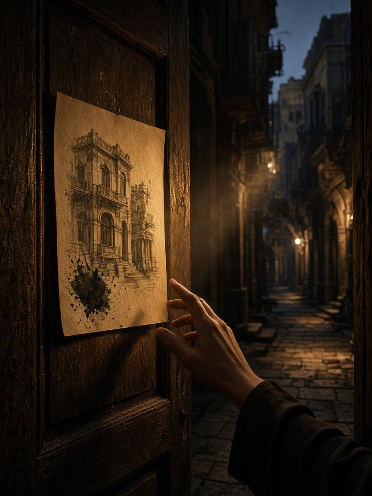
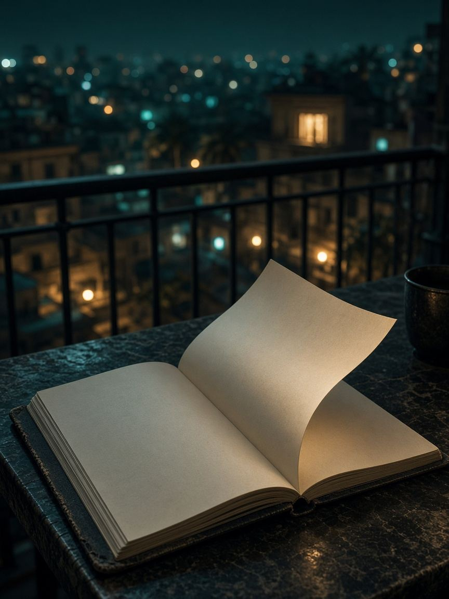
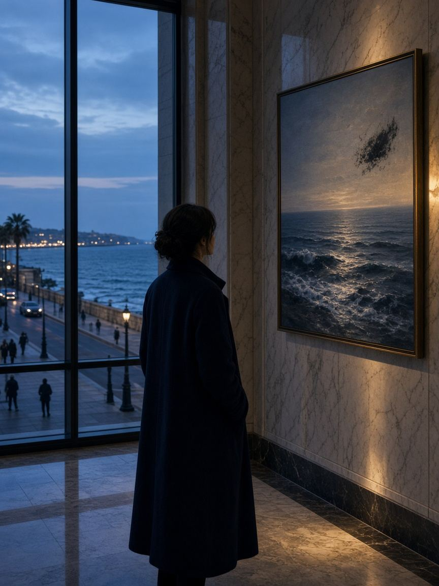
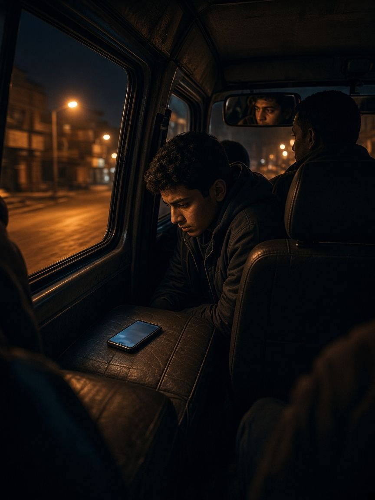
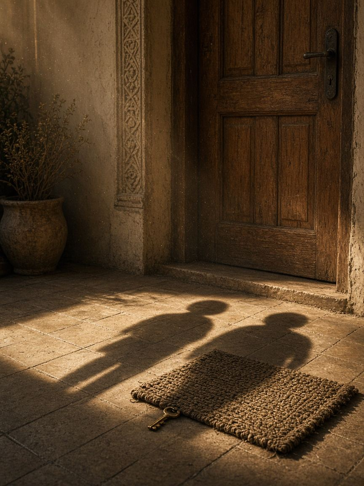
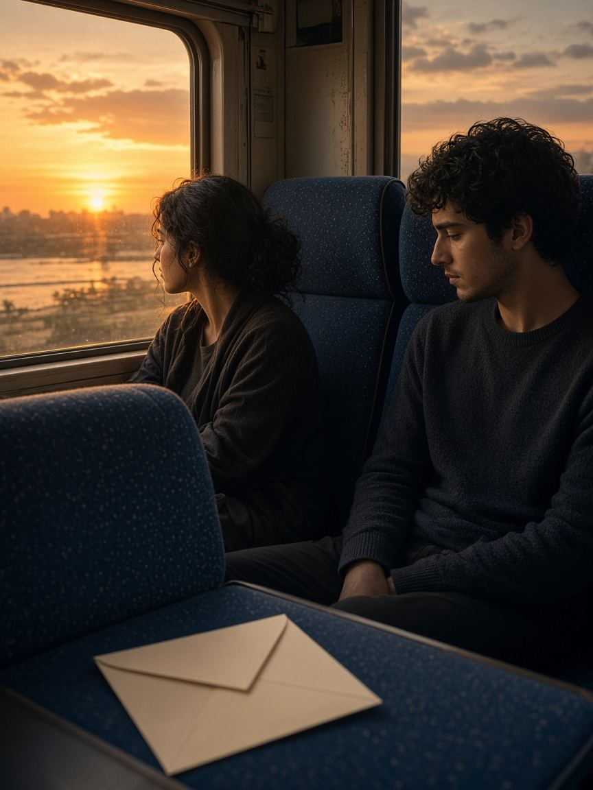

قصص
قصص مداد
قصص أصلية مصرية، بتتشد فصل ورا فصل. الغلاف رسم للقصة مش صورة حقيقية. مفيش أعداد قراء مزيّفة. آخر فصل وصلته بيتحفظ على جهازك بس.

في ممر كوداك، رسمة بتاريخ متضاف، وراجل عايز يعلّقها قبل ما الحبر ينشف.
دقيقة ناقصة من تمثيلية إذاعة، وهامش بحبر أزرق حد عايز يشتريه قبل ما الاسم يتكتب.

الملخص اتكتب لوحده، وفيه اسم شارع سلمى. والأداة ما افتكرتهاش. حد كان حاطط البيت في الصندوق.

لوحة في بهو فندق على الكورنيش، وعليها ختم قريب من ختم نور. الإعلان هيتنشر بليل.

موبايل نسيه حد على كرسي الميكروباص، والرنة جاية باسم أخت ياسين.

كل ليلة الغلاية بتصفّر في الشقة اللي قدام مريم. ثلاث ليالي والسكون أطول من الصفارة.

ندى راجعة المنصورة لبيت جدتها. العمّين عايزين يبيعوا قبل ما تقرا الورقة اللي في الأوضة المقفولة.

رسالة وصلت لياسمين بالغلط في قطار إسكندرية، وصاحبها في نفس العربة، واللوحة هتتنسى على الرصيف.